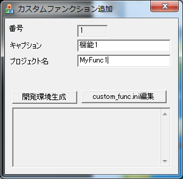
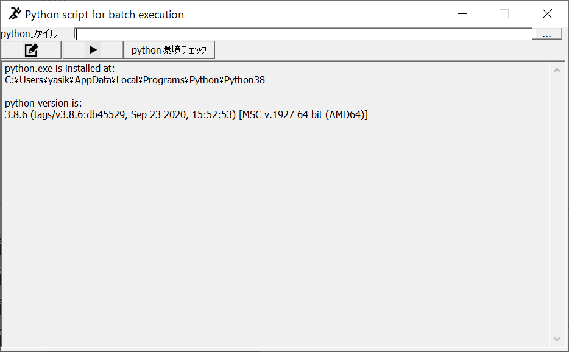

8. 外部連携と拡張
PIMPOM の機能を外から使う・拡張する仕組みとして、カスタムファンクション（ユーザー DLL）、バッチ実行、外部 C++ プログラムからの画像転送、Python 連携、TCP/IP 通信がある。
カスタムファンクション
DLL にモードレスダイアログを実装し、API で全機能を使う
バッチ実行
画像ファイル一覧に対してスクリプト・Python・DLL を順に実行
外部プログラム連携
共有メモリ＋ウィンドウメッセージで画像やコマンドを送受信
Python 連携
Pimpom.py／Pimpom.pyd と Python バッチ
TCP/IP 通信
テキストの送受信。処理は DLL で実装
カスタムファンクション（ユーザー DLL）
ユーザーが追加するモードレスダイアログを持つ MFC 拡張 DLL。PIMPOM はこれを読み込み、メニューから開き、マウスや描画などのイベントを転送する。DLL からは CPimpomAPI を通じて PIMPOM の全機能と OpenCV を使える。
登録と読み込み
- exe と同じフォルダの
custom_func.iniに、1 行 1 件でプロジェクト名=キャプションを書く（最大CUSTOM_FUNC_MAX= 10 件）。 - 起動時に
プロジェクト名.dllをAfxLoadLibraryで読み込む（通常の DLL 検索順＝実質 exe フォルダ）。見つからなければ「xxx.dll が見つかりません」と表示する。 - 読み込めたものを「カスタムファンクション」メニュー（メインメニューの 6 番目）に
"番号 キャプション"、ID 9999+i で追加する。選ぶとUserDialogOpen(i)。 - pimpom.ini の
[SETTING] DEFEULT_USER_DLGがキャプションの先頭と一致すれば、起動時に自動で開く。 - 追加・変更後は PIMPOM の再起動が必要。
エクスポート関数
PIMPOM は次の関数を名前で GetProcAddress して呼ぶ（呼ぶたびに解決）。見つからない関数は無視されるので、必須なのは OpenUserDlg だけ。雛形は extern "C" __declspec(dllexport) で公開し、ダイアログの表示中だけ CUserDlgEx に転送する。
| 関数 | 引数 | 呼ばれるとき |
|---|---|---|
OpenUserDlg | CPimpomAPI* | メニュー選択・自動起動 |
DestroyUserDlg | なし | 終了時（その後 AfxFreeLibrary） |
OnDrawMainImage_UserDlg | 画像番号 | メイン画面の描画の最後 |
OnMouseDown_UserDlg | 画像座標 | メイン画面で左ボタン押下 |
OnMouseRDown_UserDlg | 画像座標 | 右ボタン押下（雛形には未実装） |
OnMouseDrug_UserDlg | 始点、現在点 | ドラッグ中 |
OnFinishMouseDrug_UserDlg | 始点、終点 | ドラッグ終了 |
OnBatchExecute_UserDlg | BATCH_INPUT*, BATCH_OUTPUT* | バッチ実行の各件 |
OnReceive_UserDlg | 受信データ、長さ | TCP/IP でデータを受信したとき |
雛形（CustomFunc/UserDlgTemplate）
- MFC 拡張 DLL（
AfxInitExtensionModule＋CDynLinkLibrary）。出力先は..\..\bin\$(Platform)\$(Configuration)\、PIMPOM_Core.libをリンク。 CUserDlgEx: ダイアログIDD_USER_DLG_EX（400）、キャプションcustom_function_caption。初回だけ生成して表示する。イベントハンドラは空実装。GetAPI()をエクスポートし、#define API (*GetAPI())で DLL 内からAPI.xxx()と書ける。- DLL から使える本体のクラス（
PIMPOM_EXT）:CPimpomAPI、CDataUnit、CWorkArea、CMark、CImageField、CConfirmDlg、CCalcDlg、CCalculate、CPIMPOMDlg、CSocketCtrl、CSerialCtrl。
カスタムファンクション追加（CloneUserDlg.exe）
メニュー「カスタムファンクション → 追加」で起動する別プログラム。雛形を複製して新しいカスタムファンクションの開発環境を作る。
- キャプションとプロジェクト名（半角英数のみ）を入力し、Visual Studio のバージョンを選んで「開発環境生成」を押す。
CustomFunc\UserDlgTemplate\files.txtの一覧に従ってCustomFunc\<プロジェクト名>\に複製する。ファイル名と中身のUserDlgTemplateをプロジェクト名に、custom_function_captionをキャプションに置換する（.lib／.dll はバイナリコピー）。- リソース ID が他の DLL と重ならないよう、
Resource.hを番号 n でずらす（IDD_USER_DLG_EX= n×50+400 など）。番号は custom_func.ini の有効行数で決まる。 - Debug と Release 両方の
custom_func.iniにプロジェクト名=キャプションを追記する。 - ソリューションを Visual Studio で開く。ビルドすると
bin\x64\<構成>\プロジェクト名.dllができ、PIMPOM を再起動するとメニューに現れる。
「custom_func.ini 編集」でテキストエディタを開ける。

bin\x64\Release などにあることを前提に相対パスで雛形を探す。ProjectGuid を置換しないため、複製したプロジェクトは同じ GUID になる。キャプションを fprintf の書式文字列として使うため、% を含むと ini が壊れる。バッチ実行
バッチ実行ウィンドウ（5 章）、ライブ実行、外部プログラムからの BATCH_EXECUTE コマンドは、いずれも CPimpomAPI::BatchExecute(BATCH_INPUT*, BATCH_OUTPUT*) を呼ぶ。
struct BATCH_INPUT { char param[5][1024]; char imae_file_path[2048]; int image_number; bool AutoExecFlg; };
struct BATCH_OUTPUT { char result[15][1024]; int state; }; // state: 0 通常, 1 スキップ, 2 リトライ, 3 停止, 4 待機- 画像パスがあれば
SelectAndLoadImageFile(image_number, path)で読み込み、表示する。 - 実行ルールが 1 以外なら、スクリプトウィンドウ → Python バッチウィンドウの順に実行する（それぞれ表示中のときのみ）。
- 実行ルールが 0 か 1 なら、カスタムファンクション 0〜9 の
OnBatchExecute_UserDlgを順に呼び、出力を連結する。 - 実行ルールが 1 なら、ここでスクリプト → Python を実行する。
実行ルール: 0 = スクリプト → カスタムファンクション（既定）、1 = カスタムファンクション → スクリプト、2 = スクリプトのみ。スクリプトからは GetBatchInput(i)／SetBatchOutput(i, v) で入出力パラメータを扱う。
外部プログラムとの画像データ受け渡し
別に起動している PIMPOM.exe に、外部 C++ プログラムから画像・図形・テキスト・コマンドを送る（または画像を受け取る）。外部プログラムは PIMPOM_Core\include\pimpom_plot.h をインクルードするだけで使える（ヘッダのみ）。サンプルは external_data_transfer_sample\data_transfer_spl。
通信方式
- 送信側が名前付き共有メモリ
PIMPOM_SHAREDMEMをCreateFileMappingで作ってデータを書き、PIMPOM のウィンドウにSendMessage（同期）してから解放する。 - 送り先は、タイトルに
" - PIMPOM "（ID 0）または" - PIMPOM n"（ID n）を含むダイアログ。PIMPOM は起動時に 0〜9 の空き ID を取り、タイトル末尾に付ける。setTargetIDで複数起動中の PIMPOM を選べる。
| メッセージ | ハンドラ | 内容 |
|---|---|---|
WM_USER+100（入力） | OnMessageExtInput | 共有メモリの画像を指定番号の画像メモリに作成・上書きし、表示する。グラフ形式なら PlotDataToChart |
WM_USER+101（処理） | OnMessageExtProcess | 図形描画・メッセージ・マーク・グラフ・バッチ実行・コマンド実行（下表） |
WM_USER+102（出力） | OnMessageExtOutput | 指定した画像メモリを指定形式で共有メモリに書き出す（Get*Image 用） |
データ構造
struct SHEAREMEM_PLOT_IMAGE { int format, image_num, width, height, page, channel, size; BYTE pData[]; };
// format: 0 BYTE, 1 SHORT, 2 WORD, 3 LONG, 4 DWORD, 5 FLOAT, 10 3D, 11 F3D, 20 RGB, 21 MASK,
// 30-33 1D グラフ(float/double/int/BYTE), 40-43 2D グラフ
struct SHEAREMEM_EXT_PROC { int type, image_num, x0, y0, x1, y1, size; BYTE red, green, blue; int copy_src; char message[5000]; };| type | 処理 | type | 処理 |
|---|---|---|---|
| 0 | 描画準備（copy_src を RGB 化してコピー） | 11 / 12 | メッセージ追記／新規 |
| 1 | 画像の再描画 | 13 | マーク追加 |
| 2〜6 | 点・線・矩形・円・十字の描画 | 20 / 21 / 22 | グラフ追加／散布図追加／グラフクリア |
| 10 | テキスト描画 | 30 | バッチ実行（画像パスと IN0〜4 を渡し OUT0〜14 と state を受け取る） |
| 100 | スクリプト 1 行の実行（ExecuteCommand。結果文字列とエラーを返す） | ||
pimpom_plot.h の主な関数
| 分類 | 関数 |
|---|---|
| 画像送信 | PlotByteImage、PlotShortImage、PlotWordImage、PlotLongImage、PlotDwordImage、PlotFloatImage、Plot3DImage、PlotF3DImage、PlotRGBImage、SetMaskImage |
| 画像取得 | GetByteImage、GetFloatImage、Get3DImage、GetF3DImage、GetRGBImage、GetMaskImage |
| 描画・表示 | PrepareDrawing、点・線・矩形・円・十字・テキスト描画、DrawImage、ShowMessage、マーク追加 |
| グラフ | PlotDataToChart、PlotDataToChart2、クリア |
| 実行 | ExecuteCommand（スクリプト 1 行）、BatchExecute、GetDataTypeSize、Get/SetWorkArea |
| 対象選択 | setTargetID、getTargetIDs |
| 非同期 | InitAysnc、EnableAysnc、WaitAysnc、ReturnAysnc（名前付きイベントを使う。本体側には受け手が無い） |
Python 連携
PIMPOM は Python インタプリタを埋め込まない。Python 側のモジュールが外部プログラム連携と同じ共有メモリ＋メッセージで PIMPOM と通信し、PIMPOM 側は Python スクリプトを外部プロセスとして起動する。
Python モジュール（2 系統）
| モジュール | 実体 | 内容 |
|---|---|---|
python/Pimpom.py | 純 Python（Python 3.8 以上、pywin32、numpy） | multiprocessing.shared_memory で共有メモリを作り SendMessage。ShowMessage、PlotByteImage／PlotShortImage／PlotWordImage／PlotLongImage／PlotDwordImage／PlotFloatImage／Plot3DImage／PlotF3DImage／PlotRGBImage（CHW 配列）。送信のみ |
Pimpom.pyd | Boost.Python 製拡張（Tool/PimpomPlotPy、Python 3.10 用） | pimpom_plot.h のラッパー。Plot 系、Get 系、マスク、作業領域、グラフ、ExecuteCommand、非同期。さらに全マクロを Python 関数として公開（PimpomCommandExtract が CCalculate の定義から自動生成） |
import numpy as np
import Pimpom
img = np.zeros((480, 640), dtype=np.uint8)
Pimpom.PlotByteImage(0, img) # 画像メモリ 0 に表示
Pimpom.ShowMessage("done")Python スクリプトウィンドウ
CPythonBatchDlg。指定した .py を CreateProcess("python ファイル") で起動し（作業フォルダはファイルの場所、ウィンドウ非表示）、標準出力・標準エラーをパイプで出力欄に表示する。
- ファイルパスは pimpom.ini の
[SETTING] PYTHON_BATCH_FILEに保存。 - 「編集」で関連付けアプリを開き、「実行」で 1 回実行、強制終了は
TerminateProcess。同時に 1 つだけ実行できる。 - 「Python 環境チェック」は exe フォルダの
vercheck.pyでpython.exeの場所とバージョンを表示する。 - 表示中はバッチ実行の各件で実行される（スクリプトの後）。バッチの入出力パラメータは Python に渡さない。

python が PATH にあることが前提。パスを引用符で囲まないため、空白を含むパスの .py は起動に失敗する。TCP/IP 通信
| 項目 | 仕様 |
|---|---|
| 実装 | CSocketCtrl（CAsyncSocket 派生）。種別 0 = サーバー、1 = クライアント、2 = サーバーの接続用サブソケット |
| 既定値 | クライアント、localhost、ポート 9876 |
| サーバー | Create(port) → Listen。接続を受けるとサブソケットを作る。接続は 1 本だけで、新しい接続が来ると古い接続を閉じる |
| クライアント | Create() → Connect(host, port) |
| データ | テキストのみ。区切り文字 CRLF（既定）／CR／LF でメッセージを区切る |
| 送信 | API.SendString(msg) またはマクロ SendString(str)。区切り文字を付けて送る |
| 受信 | 1000 B ずつ読み、区切り文字までを受信バッファ（10000 B）に溜める。区切りを見つけたらコールバック（最大 2 個）を呼ぶ。ウィンドウはログに表示し、全カスタムファンクションの OnReceive_UserDlg を呼ぶ |
| API | OpenSocket(type, port, host, …)、SendString、CloseSocket、GetSocketStatus |
受信した文字列をスクリプトとして実行する仕組みは無い。受信内容の解釈はカスタムファンクションで実装する。
CSerialCtrl（RS-232C）はソースに存在するが、どこからも使われていない。